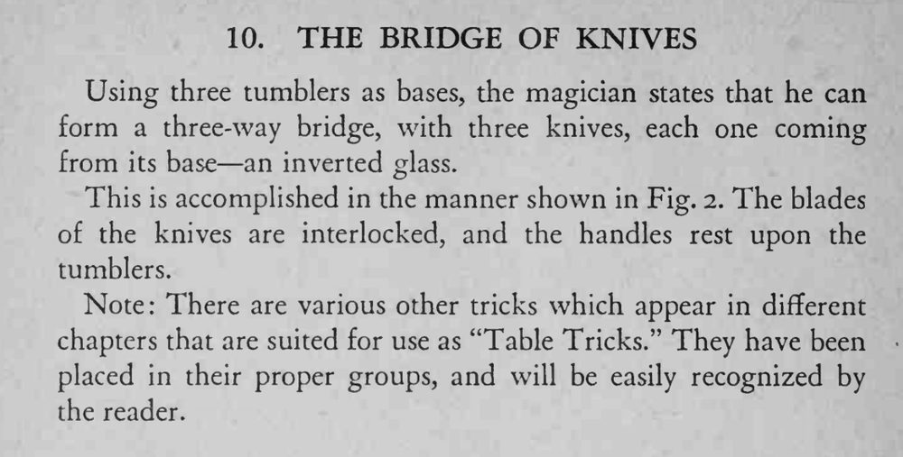

三个玻璃杯作桥墩，魔术师把三把餐刀架成一座三向的桥，悬在桌上不掉。
刀身交叠要卡稳、刀柄落点要对称，架好后先轻轻试承重。

Using three tumblers as bases, the magician states that he can form a three-way bridge, with three knives, each one coming from its base an inverted glass. This is accomplished in the manner shown in Fig. 2. The blades of the knives are interlocked, and the handles rest upon the tumblers. Note: There are various other tricks which appear in different chapters that are suited for use as "Table Tricks." They have been placed in their proper groups, and will be easily recognized by the reader.